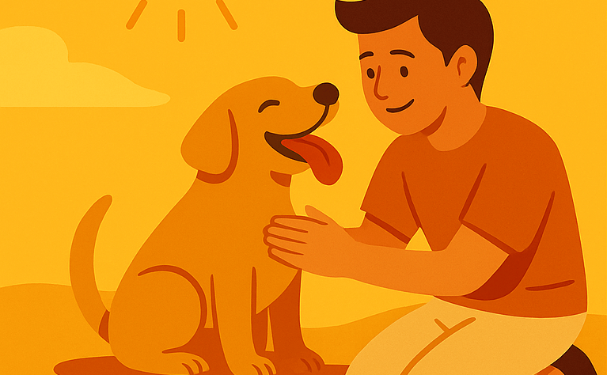

¿Cómo les afecta?
- Golpes de calor por paseos al mediodía.
- Deshidratación cuando no tienen agua fresca.
- Quemaduras en almohadillas por suelos muy calientes.
Campaña educativa
Una campaña para recordar que el sol y la lluvia también afectan a perros y gatos. Según la época del año, cambian los riesgos y las formas de protegerlos.

Ilustración general de la campaña “Bajo el mismo cielo”.
Entre otoño e invierno predominan los días secos, con radiación solar fuerte y poca humedad. Las mascotas pueden sufrir golpes de calor y deshidratación.
En temporada de lluvias la humedad y el frío aumentan el riesgo de hongos, parásitos y enfermedades respiratorias en los animales de compañía.
Algunas escenas de cómo se vive la campaña en plazas, parques y unidades educativas.
Zoonosis realiza ferias de vacunación, esterilización y educación en diferentes plazas y parques.